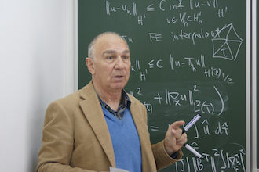

Symposium in honor of Raytcho Lazarov’s 40 years research
in Computational Methods and Applied Mathematics
Sozopol, Bulgaria, June 7-8 2013
|  |
Aims and scope. In broad terms, the symposium will focus on the design, analysis and implementation of maximally efficient numerical methods for computing numerical solutions to mathematical models of various phenomena of interest in applications in engineering and sciences. We will pursue two different but related directions. The first direction is on the theoretical aspects leading to provably efficient numerical methods and algorithms and the second direction will be on applications in sciences and engineering which benefit from these methods. Location: The symposium is associated with the 2013 edition of the Large Scale Scientific Computing conference and will take place in Sozopol, Bulgaria. Brief information about the picturesque town of Sozopol is found at this link from Wikipedia (the free encyclopedia). |
|
The symposium is co-organized by: Institute of Information and Communication Technologies (IICT), Bulgarian Academy of Sciences, Center for Applied Scientific Computing, Lawrence Livermore National Laboratory, and Department of Mathematics, Penn State. Program Committee: Oleg Iliev (ITWM Fraunhofer, Kaiserslautern, Germany), Peter Minev (University of Alberta, Canada), Svetozar Margenov (Institute of Information and Communication Technologies, Bulgarian Academy of Sciences), Panayot Vassilevski (Lawrence Livermore National Lab, USA), Ludmil Zikatanov (Penn State, USA). Proceedings: Volume 45 of Proceedings in Mathematics and Statistics (published by Springer) contains the symposium proceedings. Information about this volume is found here. A glimpse at the table of contents is found here. List of participants: Show list of participants
Symposium program: A pdf file with the updated program for the symposium is found here |
|